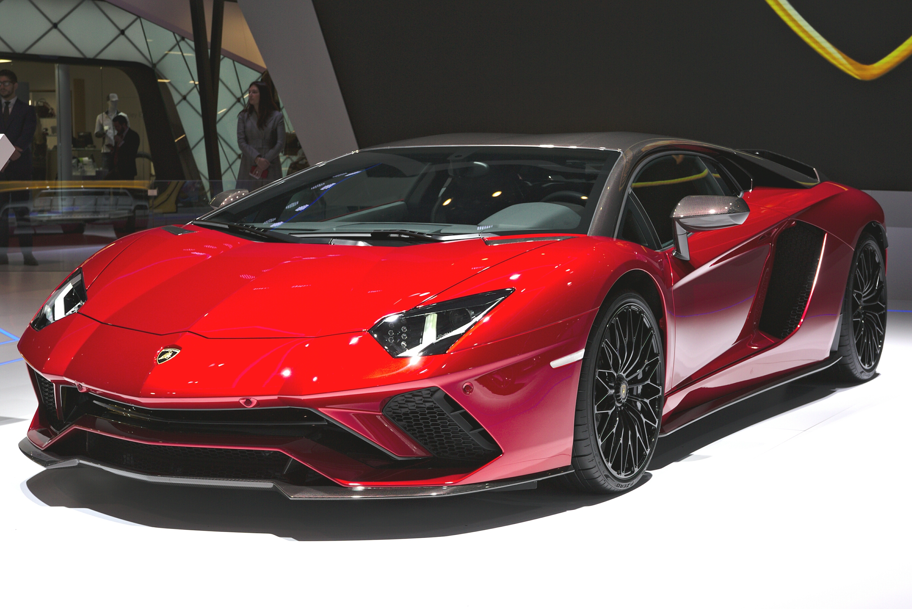
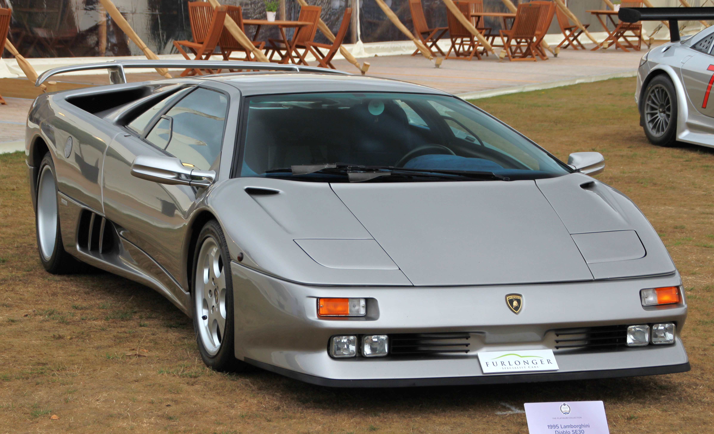
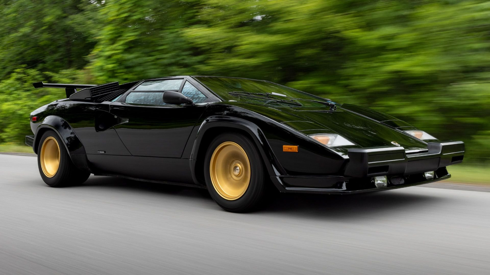
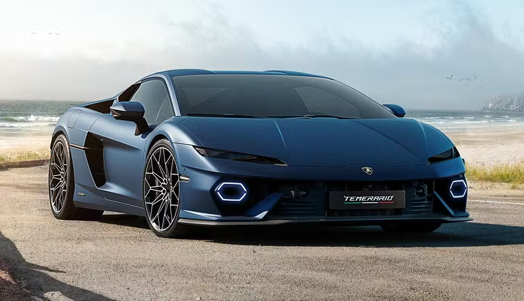
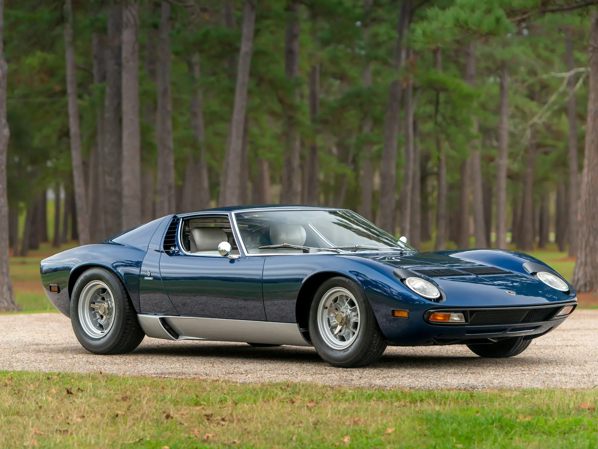
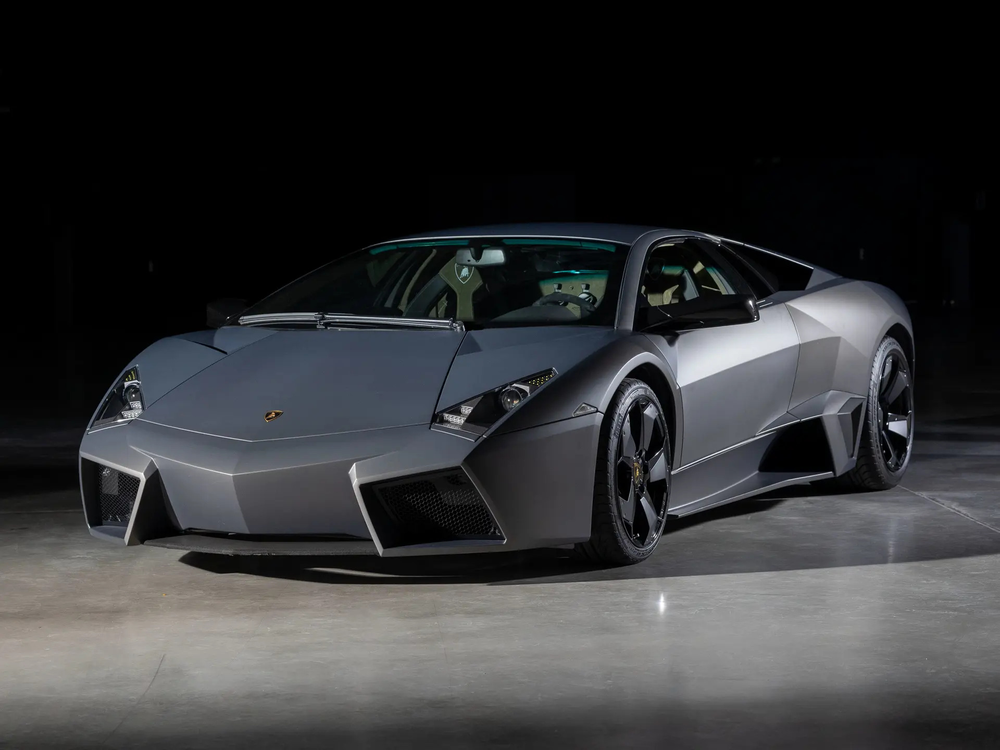
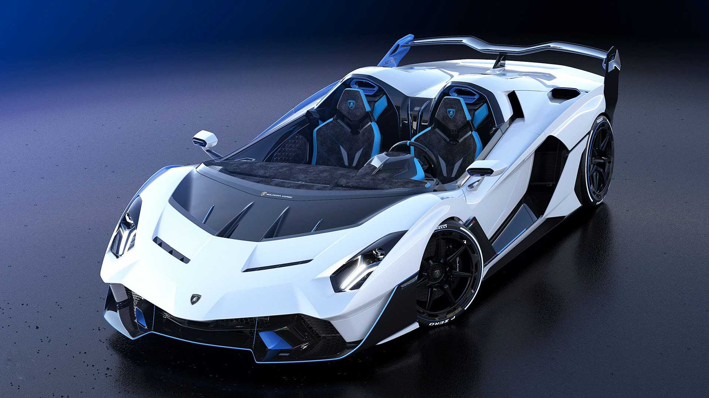
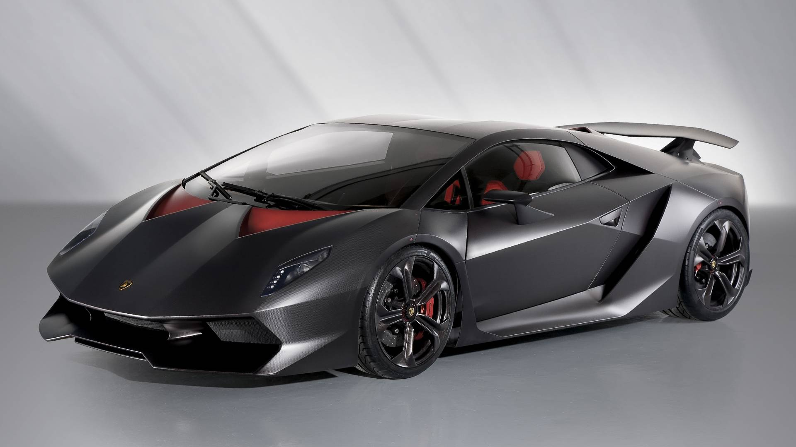
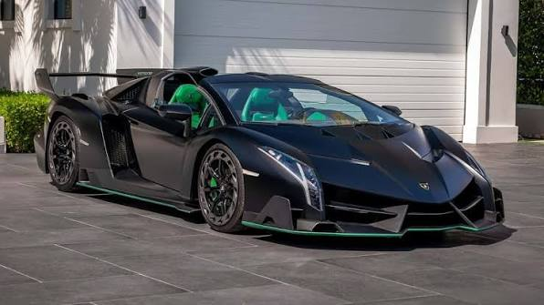

| Preço | R$ 3,8 ~ 4,5 milhões |
| Consumo Cidade | 3,8 km/L |
| 0 a 100 km/h | 2,9s |
| Cavalos | 740 cv |
| Torque | 70,4 kgfm |

| Preço | R$ 1,8 ~ 2,5 milhões |
| Consumo Cidade | 3,2 km/L |
| 0 a 100 km/h | 4,1s |
| Cavalos | 492 cv |
| Torque | 59,1 kgfm |

| Preço | R$ 3,5 ~ 5,0 milhões |
| Consumo Cidade | 2,8 km/L |
| 0 a 100 km/h | 4,7s |
| Cavalos | 455 cv |
| Torque | 51 kgfm |

| Preço | R$ 5,8 milhões |
| Consumo Cidade | 3,7 km/L |
| 0 a 100 km/h | 2,7s |
| Cavalos | 920 cv |
| Torque | 74,5 kgfm |

| Preço | R$ 12 ~ 18 milhões |
| Consumo Cidade | 2,5 km/L |
| 0 a 100 km/h | 6,7s |
| Cavalos | 350 cv |
| Torque | 36,2 kgfm |

| Preço | R$ 10 ~ 13 milhões |
| Consumo Cidade | 3,1 km/L |
| 0 a 100 km/h | 3,4s |
| Cavalos | 650 cv |
| Torque | 67,3 kgfm |

| Preço | R$ 10 ~ 13 milhões |
| Consumo Cidade | 3,1 km/L |
| 0 a 100 km/h | 3,4s |
| Cavalos | 650 cv |
| Torque | 67,3 kgfm |

| Preço | R$ 15 ~ 20 milhões |
| Consumo Cidade | 3,5 km/L |
| 0 a 100 km/h | 2,5s |
| Cavalos | 570 cv |
| Torque | 55,1 kgfm |

| Preço | R$ 45 ~ 55 milhões |
| Consumo Cidade | 3,4 km/L |
| 0 a 100 km/h | 2,8s |
| Cavalos | 750 cv |
| Torque | 70,4 kgfm |